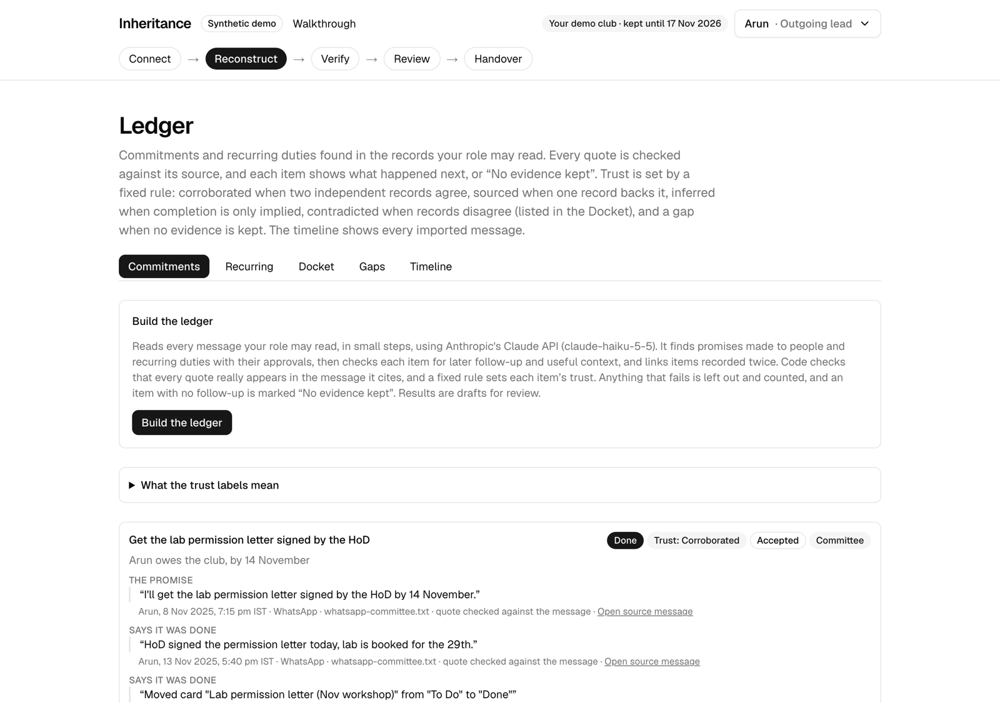
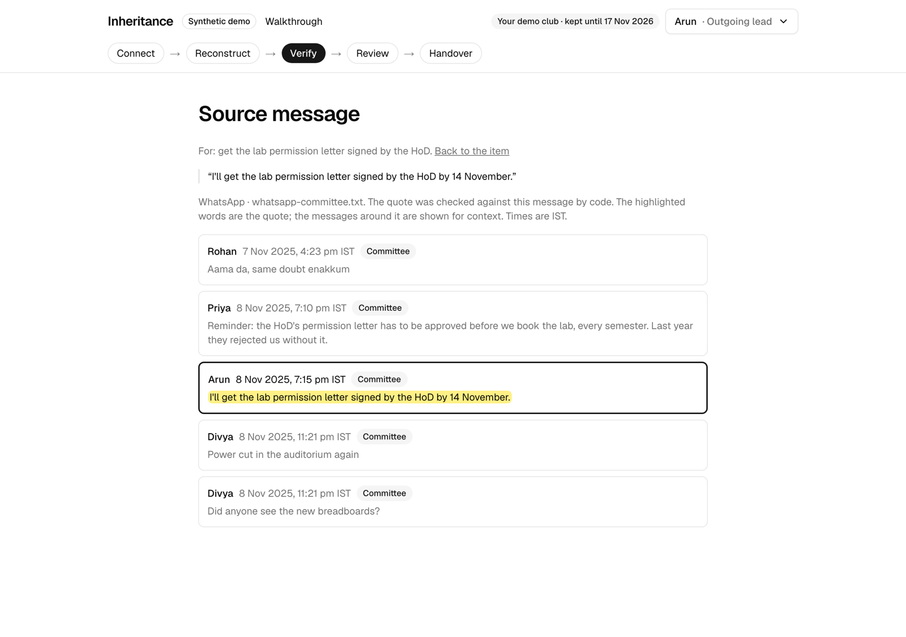
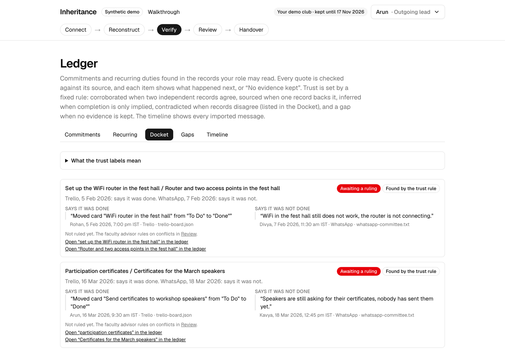
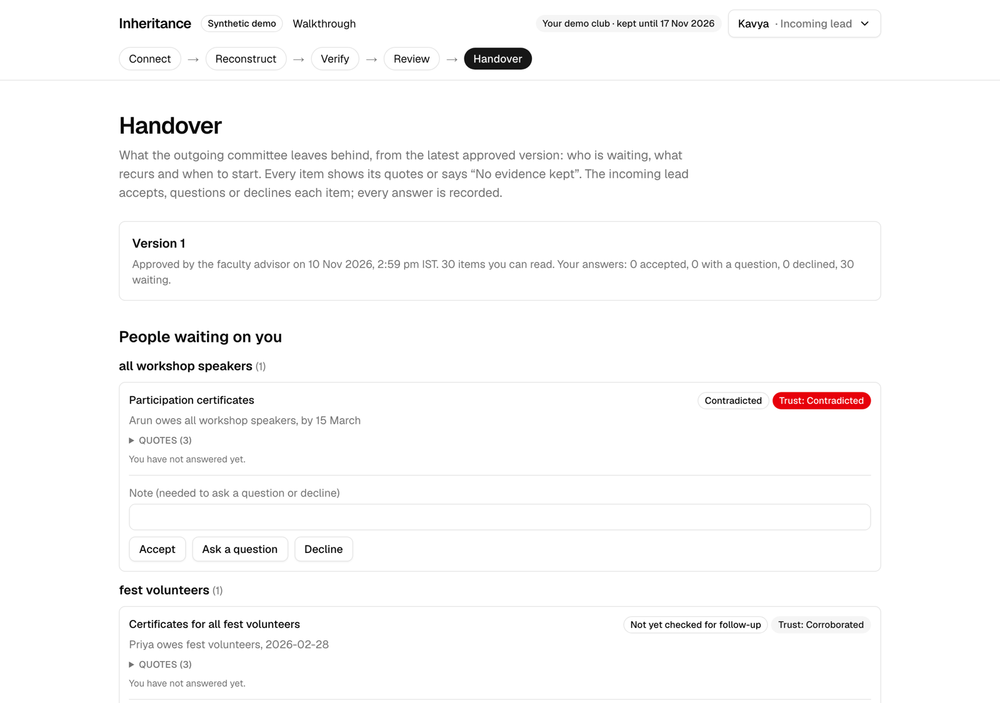
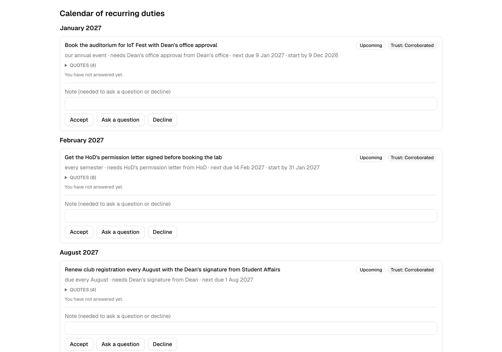

They left. Their promises didn’t.
Inheritance is a working handover system for university student clubs. It reads a club’s WhatsApp exports, meeting minutes and Trello board, and builds a ledger of what the outgoing committee still owes: promises made to people, and duties that recur every semester with the approvals they need. Every entry links to a verified quote from its source, anything the records cannot support is shown as a gap, and nothing reaches the incoming lead until the outgoing lead and the faculty advisor have reviewed and approved it. Each role sees only what its permissions allow, enforced by the database.
| Live product | https://inheritance-club-handover.vercel.app |
| Ten-minute walkthrough | https://inheritance-club-handover.vercel.app/guide |
| Source code (public) | https://github.com/Karthikeyan-J-bounteous/inheritance-club-handover |
How a judge can try it without help
On Sign in, Explore a built handover gives you a private copy of a year of a synthetic IoT club (1,961 messages in five files at four access levels) with its ledger already built by Claude, version 1 approved and six items left for you to review. Start from your own files gives you an empty club: download the four sample files from Connect, import them, press Build the ledger, then review, approve and hand over. Both run as four accounts of your own (outgoing lead, faculty advisor, incoming lead, treasurer) that you switch between from the menu.
The five steps of the brief are five pages of the product. Each step below is working on the live link.
| Step | Who | What happens |
|---|---|---|
| Connect | Outgoing lead, advisor | Upload WhatsApp .txt (Android, iPhone), Trello JSON and minutes (.md, .docx), several at once. Set an access level per file (everyone, committee, finance, private); one-to-one chats default to private. Confirm authorisation; the AI provider is named. A “what was read” report counts every dropped line by reason. Files are parsed, not stored. |
| Reconstruct | System | One button runs small background steps: commitments (who owes whom, what, by when), recurring duties (cadence, approval, approver, lead time, next due, start-by), follow-up checks, context notes (decisions, contacts, risks, dependencies) and matching of the same obligation across sources. A timeline shows every message the role may read. |
| Verify | System | Every quote is checked by code against its message, then again by the database. A fixed rule sets trust and status. The Docket lists records that disagree; the Gaps tab lists what is missing. Every quote opens its source message, highlighted. |
| Review | Outgoing lead, advisor | Accept, edit, reject or reopen each item with a reason; mark linked records “same” or “not the same”. The lead marks the draft ready; the advisor rules on conflicts and approves an immutable version. History shows every action. |
| Handover | Incoming lead | The approved version as her role reads it: people waiting on her, a calendar of duties with “Start now” and “Overdue”, sealed placeholders for what she may not read. She accepts, questions or declines each item; the outgoing lead and advisor reply to questions. |
Trust states, on every item, set by a rule, never by the model: CORROBORATED two independent records agree · SOURCED one verified quote · INFERRED only implied, never shown as fact · CONTRADICTED records disagree · GAP no evidence kept.





Everything lives in one Postgres database (Supabase). Shaded boxes carry the trust and permission logic; both run inside the database as well as in code.
import_source(), which runs as the signed-in user, so row-level security checks every row written. Only the events, a counts-only summary and the file’s SHA-256 are kept.planRun writes one job per chunk of messages, duty batch, follow-up check and match batch. The browser calls POST /api/jobs/run-next until all are done, so no serverless call runs long. Each job reads only what its user may read, through RLS; job rows hold ids and counts, never text.generateStructured(): a Zod schema turned into structured output, validated again, one retry, a cache keyed by the prompt’s hash, a daily call budget, and typed errors. Prompts never mix access levels.add_extracted_commitment, add_recurring_duty, record_followup, link_obligations) repeat every check in SQL. Triggers set each item’s access level from its cited messages, compute trust and status, open docket entries and write the audit log.review_obligation(), mark_ready(), approve_version() and rule_conflict(); a direct update by a user is refused without a reason. Versions, acknowledgements, replies and audit rows are immutable for every role.| Decision | Why |
|---|---|
| Status and trust computed by fixed rules in a database trigger | No client, reviewer or model can set them; they follow every change of evidence, including a file being removed. |
| “Corroborated” needs independence | Two records from different files or different people. One person promising and then saying it was done stays “sourced”. |
| Linked, never merged | A chat promise and its Trello card stay two records, each with its own level and quotes, so merging can never publish a restricted record. |
| A weak inference may not raise an item’s level | Found in testing: a vague hint in a finance chat hid a committee item from the incoming lead. Only plain “done” or “not done” from a more restricted record now counts. |
| Browser-driven job runner | Vercel Hobby limits function time and Supabase Free has no workers; small steps keep every call short and show progress. |
| Two-step sign-off | The lead marks ready, the advisor approves only while that mark still matches; an accepted item changed by a later run must be accepted again. |
| Per-visitor demo clubs | Each judge gets a workspace with four accounts of their own (passwords derived on the server, never stored), deleted after seven days, so nobody sees another visitor’s changes and RLS is exercised for real. |
| A frozen real-model ledger for the built club | A 160-call build cannot run inside one 60-second request, and judges should not wait or pay. The year club’s ledger is the stored output of one real run through the app’s own pipeline. |
| Used | For |
|---|---|
| Anthropic Claude API, Claude Haiku 5.5 | Proposing commitments, duties, follow-up quotes, context notes and same-item verdicts. Structured output (output_config.format) from Zod schemas, through one adapter. |
| Next.js 16, React, TypeScript | UI, server actions and API routes. |
Supabase: Postgres, Auth, RLS, pg_trgm | All data, sign-in, permissions, trigram similarity for matching. |
| Vercel (Hobby) | Hosting and one daily cron (keep-alive and clean-up of expired demo clubs). |
| Tailwind CSS, shadcn/ui (Radix) | Interface components (standard templates, disclosed). |
whatsapp-chat-parser, mammoth, zod, yaml | WhatsApp exports, Word minutes, validation, scenario files. |
| Vitest, Playwright | Unit, database and end-to-end tests. |
| Datasets | Synthetic only: a mini scenario, a year-long IoT club and a photography club, each with hand-written ground truth; rendered by a seeded script. No real people or organisations. |
Ground truth for each synthetic club (planted promises, duties, approvals, contradictions, decoys and restricted text) was written by hand before any model saw the files. A deterministic scorer grades each run. These runs went through the app’s own database pipeline on Claude Haiku 5.5, on 10 November 2026:
| Club | Messages | Promises found | Status right | Follow-up quotes | Conflicts | Duties (approver) | Precision | Decoys | Leaks | Cost |
|---|---|---|---|---|---|---|---|---|---|---|
| Year (IoT) | 1,961 | 19/19 | 18/19 | 26/26 | 2/2 | 3/4 (3/3) | 83% | 0 | 0 | $0.053 |
| Photography | 436 | 9/9 | 9/9 | 9/9 | 1/1 | 4/4 (4/4) | 90% | 0 | 0 | $0.013 |
| Mini | 21 | 5/5 | 5/5 | 5/5 | 1/1 | 2/2 (2/2) | 100% | 0 | 0 | $0.004 |
Automated tests: 395 unit tests, 185 database (row-level security) integration tests and 48 end-to-end browser tests, all passing. They include the whole flow a judge follows (four files at four levels → build → review → approve → hand over → question and reply) and the three-layer leak tests.
What the tests found and fixed, among others: the outgoing lead’s own private chat produced no items; a weak inference hid an item from the incoming lead; a hedge was missed when the quote left out “Maybe”; two semesters’ identical promises were wrongly linked; Trello to-do descriptions were read as promises.
Structured feedback from users: none yet. The Round 1 interviews were not carried out (see 08).
| Round 1 plan | Shipped | Why |
|---|---|---|
| pgvector with local MiniLM embeddings for matching | Alias table, pg_trgm trigram similarity, people and date windows, and a model verdict on unsure pairs | No vector storage on the free tier; every match decision can be explained. |
| Merge items found twice | Link them; never merge | Each record keeps its own access level and quotes, so nothing restricted is published by a merge. |
| Synthetic club generated by an LLM | Planted facts and truth written by hand; filler rendered by a seeded script | Free, repeatable, and scored against fixed truth. |
| One demo club | Per-visitor clubs: a built year club, or an empty one to build from sample files | A judge can inspect a full result in minutes, or run the whole flow, without affecting anyone else. |
| Model judges whether a promise was kept | The model points at quotes; a fixed rule sets status; a fifth status, “Likely done (inferred)” | An inference is never shown as done. |
| Forced tool use for structured output | Structured output from Zod schemas | Current Claude models refuse forced tool calls; the guarantee is the same. |
| Questions go back to the outgoing lead | Built: replies under each question or decline, audited | As planned; added in the final phase. |
Today a duty is found only when the records state the rule. Round 3 infers duties from repetition alone: the same task done at about the same point in two or more past cycles (“lab permission requested in week 1, in both past years”). It computes a start-by date from how long past occurrences took. Each such duty is labelled Inferred and lists the occurrences it rests on. For the user: routine work the outgoing team never thought to mention appears in the incoming lead’s calendar with a start date, instead of being discovered late.
Every gap the records cannot close (a promise with no follow-up, a duty with no approver or date, an unruled conflict) becomes one short question on a single page. Each answer is recorded with the lead’s name as a labelled source (“stated by the outgoing lead”), passes the same trust and audit rules, and updates the next version. For the user: the handover is completed while the outgoing lead can still be asked, and every remaining unknown is either answered or knowingly left open.
For each person or office the club owes something to (a sponsor, a lab in-charge, a department office), Inheritance drafts a short change-of-contact note: what is still owed, by when, and the new contact. It is built only from that counterparty’s approved items, so it cannot include restricted text. The outgoing lead edits and approves it, and the counterparty opens it from a signed link and acknowledges it; the acknowledgement shows on the handover. For the user: people outside the club learn of the handover too, so the old committee’s promises are not lost on the other side.
docs/ai-disclosure.md, docs/changes-from-round1.md.